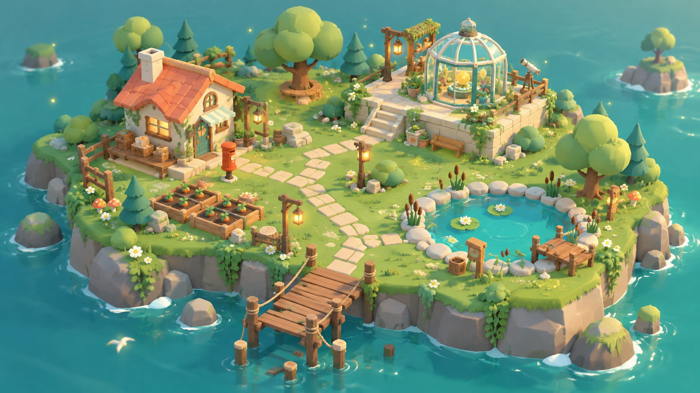

✉
苔光邮局
❀
暖风菜圃
♣
年轮树
✦
星露温室
◌
睡莲池
⌁
潮汐栈桥
米莫
露卡
E
苔
FIELD NOTES · 001
苔光邮局
晴
08:00
第 1 天
♪
?
心情
100
☾
回邮局休息
WASD / 方向键移动
E / 空格互动
点击地点自动前往
▲
◀
▼
▶
互动
岛屿手记
继续
E
一封寄给慢生活的信
苔光
邮局
穿过树影，把散落在岛上的故事重新送达。
登上小岛
进度会自动保存在此浏览器